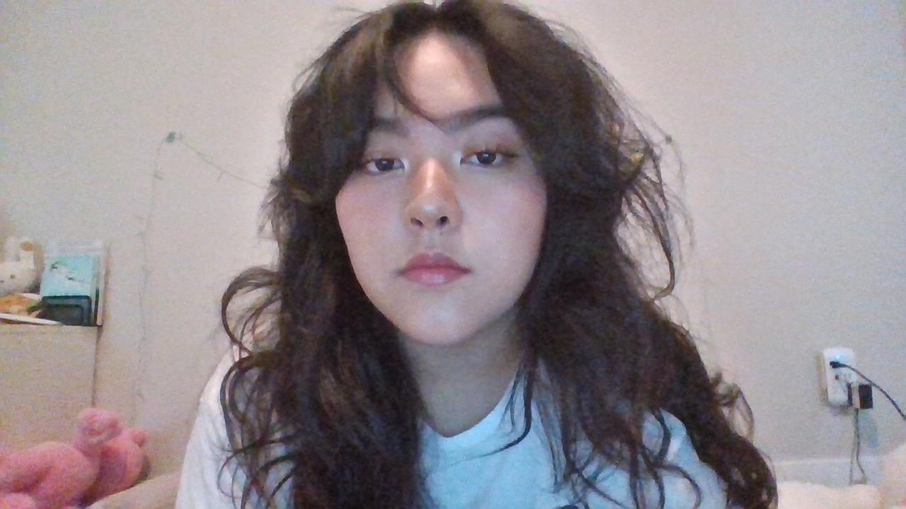

here is my spotify ☆
i enjoy listening to music as i believe that it's an art form we can enjoy at any and all times, whether we're streaming it, creating it, or humming it. i make playlists every month so i can look back and see what kind of state of mind i was in when i listen in 5, 10, or 20 years from now.
this is my pinterest board of things I find dreamy! ✧₊⁺
pinterest is my favorite form of social media. i spend a lot of time scrolling through pretty pictures, short form videos, and then organizing the ones i saved (pinned) and collaborating on boards with friends. i enjoy nature,pretty food, and mysteriously yearning LOL.
here is what i look like!